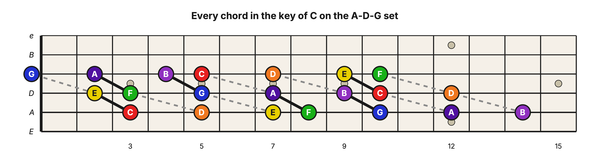
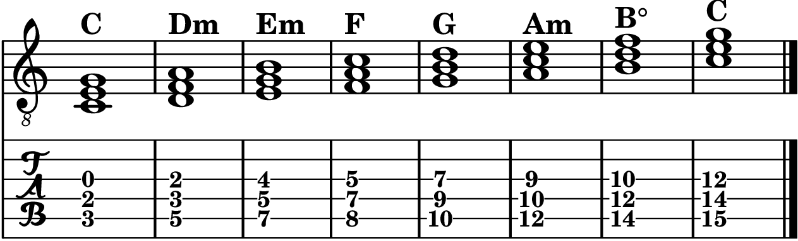

Level 2 · Chapter 26
Music Theory and The Fretboard: The Rest of the Chords in the Key
Back in "Chords in a Key" you built all seven chords of the key of C and learned that a song in C draws its chords from that palette. Three of them, the primary triads, got the full treatment: a chord symbol you can read on a chart (C, F, G) and a workout up and down the neck. The other four (D minor, E minor, A minor, and B diminished) have been built and played as shapes, but they are still missing their paperwork. You cannot write them down yet.
This chapter finishes the job: a chord symbol for every chord in the key, the two ways musicians write the Roman numerals, and one trip up the neck that plays all seven chords in a row.
The chord symbol for a minor triad
A chord symbol gives you the root note and what to stack on it. So far you know two: C5 means the root C plus its 5th (the power chord), and a bare capital letter like C means the Major triad. A minor triad adds one small letter: the root followed by a lowercase m. Dm is the D minor triad (D, F, A), Em is E minor (E, G, B), and Am is A minor (A, C, E). You say them exactly as you would expect: "D minor," "E minor," "A minor."
If you have ever looked at a chord chart and seen an Am sitting between a C and an F, you now know precisely what it is asking for: the triad built on A whose 3rd is a minor 3rd.
The chord symbol for the diminished triad
The diminished triad borrows the mark you already know from its Roman numeral: the small circle. The chord built on the 7th scale degree in the key of C is written B° and read "B diminished." You will also meet it spelled out as Bdim; the two mean the same thing.
With that, every column in the key's table has a symbol under it:
| Chord Degree ⬇ |
|||||||
| 5 | G | A | B | C | D | E | F |
| 3 | E | F | G | A | B | C | D |
| 1 | C | D | E | F | G | A | B |
| Chord Symbol ⮕ | C | Dm | Em | F | G | Am | B° |
Notice how much the symbols alone tell you. The bare letters are the Major chords, the m's are the minor chords, and the circle marks the one diminished chord. A chord chart for a song in the key of C will spell its chords from this row.
Two ways to write the Roman numerals
You already know one way. Since "Music Theory: The Triad (A Bird's-Eye View)," this book has written the numerals the Classical way: upper case for a Major chord, lower case for a minor chord, and a circle on the diminished one. The quality is carried by the case of the numeral itself.
There is a second convention, used on Jazz charts and lead sheets, and it works exactly like the chord symbols you just learned. Every numeral is written upper case, and the quality is attached as a suffix: nothing for Major, an m for minor, a circle for diminished. The 2nd scale-degree chord in a Major key becomes IIm, read "two minor." (Some jazz charts write the minor suffix as a dash instead: II-.)
Here are the two systems side by side, with the chords of C under them:
| Classical ➡ | I | ii | iii | IV | V | vi | vii° |
| Jazz ➡ | I | IIm | IIIm | IV | V | VIm | VII° |
| In the key of C ➡ | C | Dm | Em | F | G | Am | B° |
Both rows say the same seven things. I will keep writing the Classical way in this book, but you will run into both out in the world, so it is important that you can read both.
Saying the numbers out loud
When musicians talk (on a gig, in a lesson, in a rehearsal), they usually skip the Roman spelling and just say the number: "the 2 chord," "the 4 chord," "the 6 chord." In that context, they mean the chord built on that scale degree. The quality goes without saying, because everyone knows what the key serves at each degree. If the song is in C and someone calls "go to the 6," they mean Am, minor and all, because the chord built on the 6th scale degree of a Major key is always minor.
Every chord in the key, up one string set
Now let's play the whole palette. In Level 1, the key of C gave you only six power chord shapes, and the table had a "??" where the chord built on the 7th scale degree should have been: the 5th on that degree was diminished, so no power chord lived there. Triads have no such hole. The key's vii° chord exists, you built it in "Chords in a Key," and now it has a symbol.
Here are all seven chords in root position on the A-D-G string set, roots climbing the A string in scale order:

Read the ladder the way your hands will. The roots walk up the A string through the C Major scale: frets 3, 5, 7, 8, 10, 12, 14. On C, F, and G your fingers make the Major grip you know, with the 3rd one fret behind the root and the 5th three back (C's 5th falls off the board's edge and rings as the open G string). On D, E, and A the 3rd drops one more fret back: the minor grip. And on B, the last rung, the 5th pulls in a fret too. That shrunken grip is the diminished triad, the same one-note-tighter move your hand already made in "Chords in a Key."
Here is the ladder written out, ending on C an octave up:

The barre chords play them too
The three-note grips are not the only way up the ladder. Those same A-string roots are the roots of your A-shape barre chords: play C, F, and G as Major barres at the 3rd, 8th, and 10th frets, and Dm, Em, and Am as minor barres at the 5th, 7th, and 12th. Or root the key on the low E string instead and use E-shape barres. As "Barre Chords Are Triad Voicings" showed you, the chart does not care which voicing you choose; C is C and Am is Am at any size.
The one holdout is B°. Both barre shapes carry a Perfect 5th inside them, and the diminished triad's 5th is not Perfect, so neither barre can play it. When the vii° chord comes up, reach for the three-string grip from the figure above.
Hear it
Play the ladder from the tab, slowly, a strum or two per chord, and listen to the key change color as you climb: bright (C), dark (Dm), dark (Em), bright (F), bright (G), dark (Am), and then that tense, unstable rung at the top (B°).
Do not stop on B°. Play it, hold it, and feel how hard it leans; then let each finger step up its string to the C at frets 15, 14, and 12. The lean releases. That last move, the vii° chord melting into the I chord an octave up, is the sound of a key pulling toward home, played one ladder rung at a time.
Try it yourself
Every Major key deals the same hand: Major triads on the 1st, 4th, and 5th degrees, minor triads on the 2nd, 3rd, and 6th, and the diminished triad on the 7th. Write the seven chord symbols, in scale order, for the two other keys you know:
- Key of G (one sharp: F♯)
- Key of D (two sharps: F♯ and C♯)
Then write the Jazz Roman numerals for the key of G, and again for the key of D.
Answer key
- Key of G: G, Am, Bm, C, D, Em, F♯°
- Key of D: D, Em, F♯m, G, A, Bm, C♯°
- Jazz numerals, key of G: I, IIm, IIIm, IV, V, VIm, VII°
- Jazz numerals, key of D: I, IIm, IIIm, IV, V, VIm, VII°
Look at the last two answers. You wrote fourteen different chord symbols but only one row of numerals, because the numerals are the same in every Major key. That is exactly what Roman numerals are for: the chord symbols name the chords of one key, and the numerals name the pattern shared by all of them.